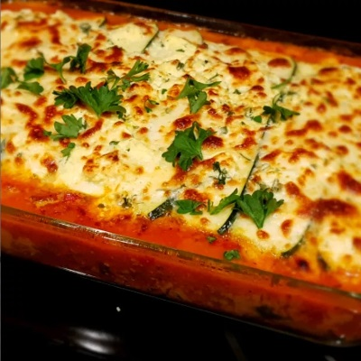

Lasagna Recipe

Description
Zucchini lasagna is an ideal low-carb dinner to satisfy your Italian food
craving. It's perfect in the summer with garden-fresh veggies and herbs,
or in the winter when you need a comforting meal. You won't even miss the
noodles in this one!
Ingredients:
-
Zucchini: Of course, you’ll need zucchini! Two large
zucchini should make enough for eight servings.
-
Seasonings: This zucchini lasagna is seasoned with
salt, pepper, fresh basil, fresh oregano, and fresh parsley.
-
Beef: This recipe calls for ground beef, but you can
use ground turkey for a lighter take.
-
Fresh Produce: Aside from the zucchini, you’ll also
need a green bell pepper, an onion, and mushrooms from the produce
aisle.
-
Frozen spinach: Frozen spinach is a convenient,
colorful, and nutrient-rich ingredient.
-
Tomato products: A combination tomato paste and tomato
sauce.
- Wine: Red wine enhances the overall flavor.
-
Cheese: You’ll need low-fat ricotta cheese, mozzarella
cheese, and Parmesan cheese.
-
Egg: An egg adds moisture and helps bind the ricotta
mixture together, preventing runniness.
Steps:
You’ll find the full, step-by-step recipe below — but here’s a brief
overview of what you can expect when you make homemade zucchini lasagna at
home:
- Slice, salt, and drain the zucchini.
- Make the meat sauce.
- Make the tomato sauce.
- Make the ricotta mixture.
-
Assemble the zucchini lasagna according to the detailed instructions in
the recipe.
- Bake according to the recipe.